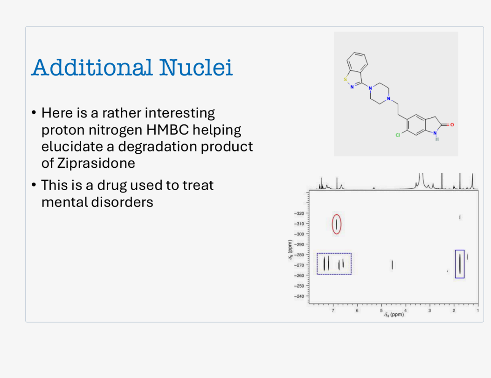

一句话目标：
纵轴是负 ppm。把 −309 读成 "+309"，或者以为纵轴数字自上而下递减，都会让整张图读反。原图纵轴：−320（上）→ −240（下）。
点击任一结构单元：右侧读数与解释、中间结构式高亮、重建谱图上的对应区域会一起更新。
范围 1.00 – 8.00 ppm，步长 0.01。数值来自原图横轴刻度（原图观测）。
范围 −342.5 – −232.5 ppm（覆盖原图绘图框边界）。注意 −342.5 在上、−232.5 在下，滑动条方向已按此设置。
按估读相对强度过滤。演示模型 仅用于显示控制，不改变任何原始读数。
理论最佳 Δ₂ = 1/(2J)，此处对应 J ≈ 4.5 Hz。演示模型：强度按 |sin(π·J·Δ₂)|·exp(−2Δ₂/T₂) 计算，T₂ = 1.0 s 为演示取值，各峰 J 值为演示假设值，不是原图数据。
"估读重建图"是按原图估读的峰位重画的示意散点图；"原图叠加层"把游标直接叠在未改动的原图上。两者坐标已按同一标定对齐。
谱图较宽：窄屏上可左右滑动查看完整坐标轴。

原图未作任何改动，仅在其上叠加了游标与选中标记。原图坐标轴绘图框：横轴像素 662–1025，纵轴像素 408–651。
骨架按原图右侧结构式重画（示意图，非原始矢量图）。原子符号与颜色对应原图：S 黄、N 蓝、O 红、Cl 绿、H 青。该骨架与齐拉西酮一致，分子式 C21H21ClN4OS。
上排为分子中出现的官能团结构小图（示意）：从左到右依次是 1,2-苯并异噻唑、哌嗪、氧化吲哚内酰胺、芳基氯。
当前区域：全图。
原图文字（英文原句 → 中文对照）：
| 位置 | 英文原文 | 中文对照 |
|---|
"强度"一列是原图竖直像素高度，只作相对强弱代理，不是积分值，也不能用于定量。"归属（原图）"一列只记录原图的手工标注，原图没有给出任何原子级归属。
| 编号 | δH (ppm) | δN (ppm) | 估读强度 | 原图标注 | 来源 |
|---|
| 标注 | δH 范围 | δN 范围 | 包含交叉峰 | 原图说明 |
|---|
| δH (ppm) | 估读高度 | 相对强弱 | 备注 |
|---|
原图一维投影上另有若干极弱峰未能可靠识别，未列入。原图未标注溶剂，因此无法区分样品信号与残余溶剂/杂质信号。
| 中文 | 英文 | 说明 |
|---|
用户提供的幻灯片截图，文件名 clipboard-2026-10-11T00-56-02-585Z-7db2ec6a.png，尺寸 1053 × 811 px。内容：标题 Additional Nuclei、两行英文要点、右侧上方一张分子结构式、右侧下方一张 ¹H–¹⁵N HMBC 二维谱（含顶部一维投影与三处手工标注）。本页将其完整内嵌并保留原样。
该章节摘要要点（逐条转述）：
说明：以上来自公开可检索的章节摘要，用于说明"降解产物 + LC-MS 初判 + NMR 修正"这一背景。原图本身并未引用该文献，本页也不据此推断该降解产物的确切结构。
verify/verify_data.py 中，可独立重跑。verify/verify_data.py 的 C7 组检查），不是推测。verify/verify_page.py 在无头 Chromium 中实测通过。本页为教学用途的交互式解读，不构成任何分析方法的验证报告。原图版权归其原作者所有。